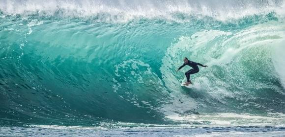
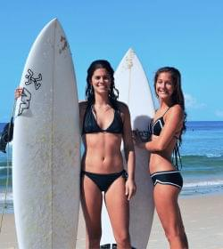
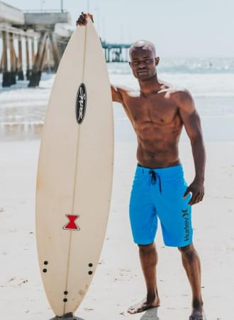
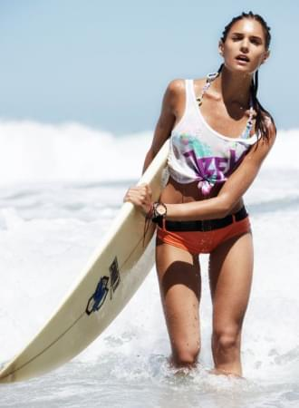
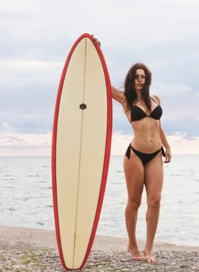
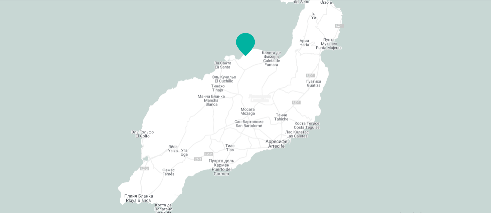

wawe Школа серфинга на Канарских островах
Кнопка - листать к блоку «О нас»о школе, о серфинге, о канарах
Канарские острова не случайно называют европейскими Гавайями – это идеальное место для поклонников серфинга: стабильный теплый ветер круглый год, песчаные пляжи, километры нетронутых просторов и прозрачное море. А настоящей Меккой для серфингистов становится Фуэртевентура – второй по величине остров архипелага.
Пока что вы только хотите понять, что такое серфинг, или уже испытали всю прелесть катания на волнах, но желаете поднять свой уровень? Наша школа серфинга сможет предложить обучение для любого уровня подготовки.
Именно здесь лучшее в Испании место, в котором можно пройти обучение серфингу. Кроме того, что зимой и осенью сюда приходят огромные атлантические волны, Фуэртевентура может похвастать и множеством мелководных спокойных лагун, отлично подходящих для обучения начинающих серфингистов.
Четыре часа увлекательных занятий в день помогут вам уверенно покорять волны, почувствовать себя настоящим серфингистом.
Серфинг на Канарских островах доступен круглый год – и волны, и подходящая погода здесь есть всегда. Причем волну, подходящую по уровню, сможет найти и настоящий профи, и новичок. Не случайно считается, что именно это место лучше всего подойдет для обучения здесь возможно без сложностей переходить на новый уровень.
Основные достоинства нашей русской школы – высокое качество преподавания и организации занятий, безопасность (все наши клиенты застрахованы в компании Allianz), отличный инвентарь и экипировка (предоставляется на весь курс обучения), в том числе мягкие безопасные доски для начинающих.
Перечисляя достоинства, нельзя обойти и то, что пляжи Фуэртевентуры самые протяженные на Канарах. В итоге невозможно представить их переполненных туристами. Вы столкнетесь только с теми, кого,как и вас, будет интересовать одна цель – обучение серфингу.
Сначала мы определяем уровень катания и физической подготовки и только потом составляем программу подготовки. И можем заверить, что после того, как закончится обучение, вы не только получите массу великолепных ощущений, но и это уровень поднимется на новую ступень.
в школе вы получите
проживание
Наша школа серфинга находится в 100 м от океанского побережья. К услугам гостей открытый бассейн и бесплатный Wi-Fi. Из верхней террасы открывается вид на океан. Расстояние до центра города 15 мин.
перелет и страховку
Все участники программы застрахованы страховой компанией Allianz.
Перелет из Тенерифе до острова Лансароте и обратно входит в стоимость программы.
обучение и экипировку
Все оборудование и экипировка известных производителей и предоставляется на весь курс программы. Тренировочный процесс начинается с определения вашего уровня катания.
- 85%
Приехали второй раз
- 95%
Научились кататься
- 99%
Довольных клиентов
Огромным преимуществом нашей школы является собственная методика обучения. Мы разработали собственный стиль обучения серфингу, который позволяет новичкам максимально быстро встать на доску.
Именно наша методика и наши преподаватели позволили нам пройти аттестацию Федерации серфинга Канарских островов - FEDERACIÓN CANARIA DE SURF. Это означает, что наша школа соответствует всем мировым стандартам. Переаттестация производится ежегодно и это позволяет нам всегда стремиться к улучшению обучения.
покоряй вершины
Преподаватели нашей школы серфинга в числе лучших серферов на Канарских островах. Среди них - чемпион Европы по лонгборду, который с радостью поделится опытом как с новичками, так и более опытными серферами. Все члены преподавательского состава являются сертифицированными членами Федерации серфинга Канарских островов. Некоторые из них знают русский язык, что определенно позиционирует нас как русскую школу серфинга за границей!
Весь тренерский состав регулярно участвует в семинарах и курсах повышения квалификации, которые проводятся по всему миру различными известными серф-клубами и федерациями. Поэтому в нашей школе серфинга вы можете быть спокойны: вас обучают лучшие тренеры!
Методика обучения серфингу рассчитана как на новичков, на серферов среднего уровня, так и на серферов уровня ТОП. Тренеры находят подход к каждому, несмотря на то, что обучение серфингу в нашей школе производится в группах. Однако, мы предлагаем персональные уроки серфинга - только вы и тренер!
Галерея
- 
- 
«Если сомневаешься – иди катайся.» Нэт Янг, первый Чемпион Мира по сёрфингу
Видео Wawe

Wawe в цифрах
- 450туристов
- 2500часов катания
- 10проф. тренеров
- 365дней в году
Блог
Наша команда
- 
Mike
Главный инструктор
- 
Mary
инструктор
- 
Ольга
инструктор
Пакеты услуг
Стандарт
- Проживание на вилле 6 ночей
- Номер категории стандарт
- Экипировка для обучения
- Обучение серфингу 5 тренировок по 2 часа
- Страховка
- Вечеринка с угощениями и дискотекой
450$
Все включено
- Проживание на вилле 6 ночей
- Номер категории люкс
- Экипировка для обучения
- Обучение серфингу 8 тренировок по 2 часа
- Страховка
- Вечеринка с угощениями и дискотекой
- Авиа перелет Тенерифе -Лансароте - Тенерифе
- Завтраки на вилле
950$
Профи
- Проживание на вилле 8 ночей
- Номер категории люкс
- Экипировка для обучения
- Обучение серфингу 16 тренировок по 2 часа
- Страховка
- Вечеринка с угощениями и дискотекой
- Авиа перелет Тенерифе -Лансароте - Тенерифе
- Завтраки и ужины на вилле
1450$
